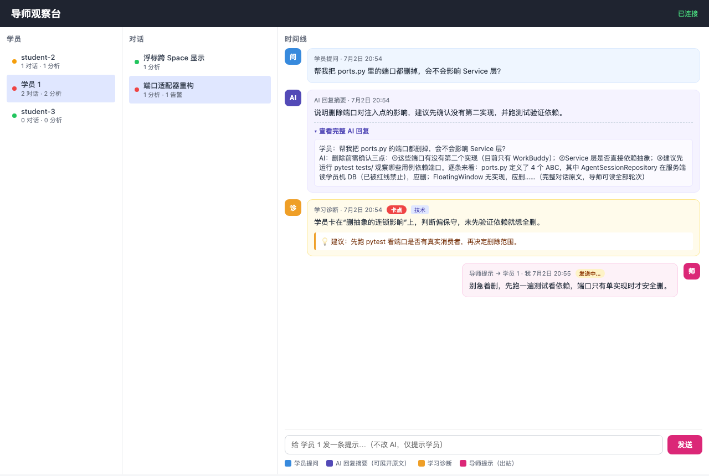

01 / 学习过程变隐形
只看最终产出，不知道中间发生了什么
同样一段代码、同样一个“完成”，背后可能对应完全不同的理解程度和学习状态。
AI 辅助编程让“得到答案”变得很快，但学习的关键不只在答案。一个人可能是在理解后推进，也可能是在反复试错、复制粘贴，或者已经卡住却没有及时求助。
同样一段代码、同样一个“完成”，背后可能对应完全不同的理解程度和学习状态。
导师需要一个全局视角，先看到值得关注的信号，再决定把时间花在哪里。
越早发现低效对话、反复绕圈或理解断点，越有机会用很小的提醒避免大段时间浪费。
我们不替学员回答，而是帮助大家更早看见“正在发生什么”。
系统沿着 WorkBuddy 已经存在的对话生命周期工作。采集发生在旁路，分析集中在服务端，结果分别回到学员浮标和导师观察台。
Hook 在“学员发出问题”和“AI 回复完成”时收到通知，只带走必要的对话尾部，不阻塞原本的工作流。
hook → spool服务端保存完整的学习过程，调用 LLM 生成学习诊断、技术助教建议、AI 回答摘要和严重程度。
store + analysis学员浮标得到低频、即时的提示；导师观察台看到全体学员的状态、会话和时间线。
float + mentor desk导师消息只送给指定学员。在线实时到达，离线后也能补拉；只有学员真正处理并回执，才算送达。
observe → respond可以把它理解成“学员端的信使 + 中心服务的大脑 + 导师端的观察台”。三者通过公网连接，但每一块都有清楚的责任边界。
不改变学员已有工具，只在旁边采集和呈现。
把多台学员机的数据汇总成一个可靠的学习视图。
让导师先看全局，再对单个学员做轻量干预。
这不是只存在于架构图里的系统。导师在浏览器里看全班，学员在 WorkBuddy 旁边收到轻量提醒；两边看到的是同一条学习过程的不同视角。

学员端界面在受控演示环境查看
两张图放在一起，能直观看到系统的两种视角：导师看全局，学员在原来的工作界面里得到轻量入口。
普通读者看到这里，先记住三句话就够了：谁负责什么、数据只认哪里、消息怎样才算送达。技术同事可以点击对应卡片继续往下看。
协作开发时，可以先按这三个边界找到自己的位置。模块内部可以继续演进，但不要让“采集、分析、呈现、发送”互相穿透。
像一个不打扰工作的信使：先在本地稳稳接住，再通过网络送到中心。
像一个学习信息中枢：保存事实、调用分析、统一分发，不依赖某一台学员机。
像一块班级控制台：先判断哪里值得关注，再把一句有上下文的提示送到对应的人。
这是协作时最需要共同遵守的边界。它决定了系统能不能从“单机演示”走向多机使用，也决定了出了问题时我们能不能追溯。
本地知道 WorkBuddy 的发生了什么，但不把本地路径和数据库访问交给服务器。
所有学员的学习状态都在中心汇总，页面和分析只读取中心自己的数据。
导师消息是这个项目里最容易被低估的一条链路。WebSocket 只能负责快，真正的送达要以学员端处理成功后的回执为准。
即使学员暂时离线，消息也不会因为“当下没连上”而消失。
在线的学员立刻看到；断线的学员之后通过补拉恢复。
只有真正渲染和处理过的消息，才有资格进入下一步。
这个顺序保证重连、重启、响应丢失时仍然可以恢复。
核心链路已经落地并经过自动回归验证；接下来更重要的是把真实环境、跨平台体验和协作入口继续补齐。
第一次参与时，不需要一次读完所有代码。先把这些词和它们在系统里的位置对上号，再从对应模块往下钻。
WorkBuddy 在关键事件发生时调用的小脚本。它只负责把事件交给本地发送链路，不负责分析，也不应该拖慢 WorkBuddy。
跨平台的学员端共享核心，负责本地暂存、网络发送、重连、去重和消息回执。它不依赖 macOS 或 Windows 的界面 API。
中心服务自己的 SQLite 数据库，是服务器唯一权威源。学员机上的 WorkBuddy 数据库不属于服务器的读写范围。
服务内部的消息分发器。业务服务发布“分析完成”或“导师消息”等事件，浮标和导师台分别订阅自己需要的部分。
一种保持连接的实时通道。它让新事件可以主动推到客户端，但不单独承担可靠送达；可靠性由持久化和回执保证。
当前服务必须以单个应用进程运行，因为 EventBus 和连接注册表在进程内。拆成多个 worker 会让广播和定向消息路由失去统一视图。